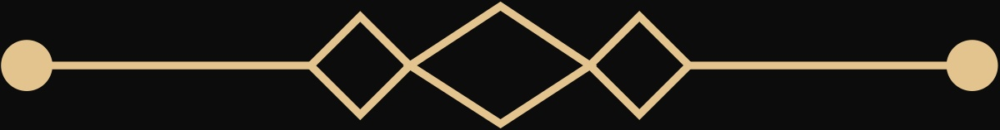

GRUPO DE PRODUCTOS ZENITH

Soluciones tecnológicas de asistencia
ZENITH es el primer grupo de productos de VITRA. Sus líneas comparten una base de desarrollo en software, electrónica, sensores y sistemas inteligentes, pero evolucionan de forma independiente según su utilidad y validación.
-

ZENITH S
ZENITH S


ZENITH D


ZENITH X


Presiona atrás de nuevo para salir